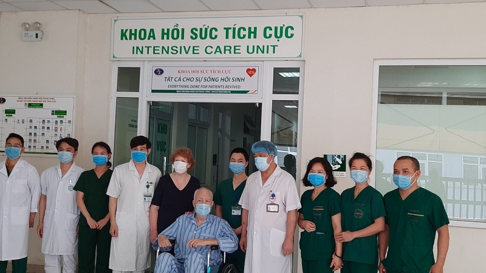

22 bệnh nhân mắc Covid-19 vừa được công bố khỏi bệnh, nâng tổng số ca khỏi bệnh tại Việt Nam lên 168 người.
Thông tin từ tiểu Ban điều trị - Ban Chỉ đạo Quốc gia phòng, chống dịch Covid-19 cho biết, hôm nay (14/4), cả nước đã có 22 bệnh nhân mắc Covid-19 được công bố khỏi bệnh.
Như vậy, đến thời điểm này tại Việt Nam đã có tổng cộng 168 bệnh nhân mắc Covid-19 được công bố khỏi bệnh.
Bộ Y tế khuyến cáo về việc cách ly, theo dõi sức khỏe trong phòng chống Covid-19:
- Đối với những người tiếp xúc gần với bệnh nhân dương tính với Covid-19: Phải cách ly ngay tại cơ sở y tế trong vòng 14 ngày, đồng thời lấy mẫu bệnh phẩm để xét nghiệm.
- Đối với người tiếp xúc với người tiếp xúc gần với bệnh nhân dương tính với Covid-19: Cách ly, theo dõi sức khỏe tại nhà, nơi lưu trú, cư trú trong vòng 14 ngày và thông báo với chính quyền cơ sở (phường, xã, thị trấn) và phải theo dõi chặt chẽ tình hình sức khỏe. Nếu thấy có biểu hiện sốt, ho, hắt hơi, sổ mũi, mệt mỏi, ớn lạnh hoặc khó thở thì lập tức cho cách ly ngay tại cơ sở y tế và lấy mẫu bệnh phẩm để xét nghiệm.
- Thường xuyên đeo khẩu trang, che miệng khi ho, hắt hơi.
- Rửa tay bằng xà phòng liên tục để tránh nguy cơ lây truyền bệnh cho những người khác.
- Chia sẻ lịch trình di chuyển của bản thân với nhân viên y tế.
- Gọi ngay đến đường dây nóng thông báo thông tin: 19003228 và 19009095.